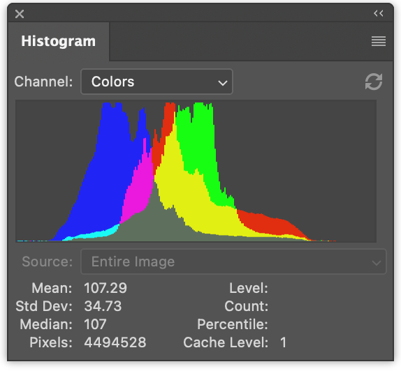
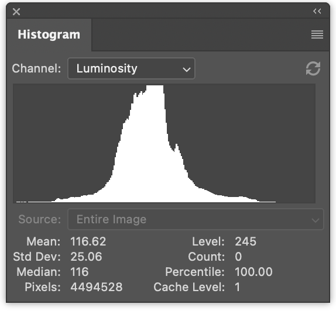

在上一篇文章中，我们介绍了如何在 JavaScript 中制作图像直方图，然后将其转换为使用 WebGPU，并经历了多个优化步骤。
接下来让我们用它再做几件事。
给定这样一张图片
通常会生成多个直方图


左边有 3 个直方图，分别是红色、绿色和蓝色的数值。它们是重叠绘制的。右边是亮度直方图，就像我们在上一篇文章中生成的那样。
一次性生成 4 个直方图只是一个微小的改动。
在 JavaScript 中，生成 4 个直方图的改动如下
function computeHistogram(numBins, imgData) {
const {width, height, data} = imgData;
- const bins = new Array(numBins).fill(0);
+ const bins = new Array(numBins * 4).fill(0);
for (let y = 0; y < height; ++y) {
for (let x = 0; x < width; ++x) {
const offset = (y * width + x) * 4;
- const r = data[offset + 0] / 255;
- const g = data[offset + 1] / 255;
- const b = data[offset + 2] / 255;
- const v = srgbLuminance(r, g, b);
-
- const bin = Math.min(numBins - 1, v * numBins) | 0;
- ++bins[bin];
+ for (const ch = 0; ch < 4; ++ch) {
+ const v = ch < 3
+ ? data[offset + ch] / 255
+ : srgbLuminance(data[offset + 0] / 255,
+ data[offset + 1] / 255,
+ data[offset + 2] / 255);
+ const bin = Math.min(numBins - 1, v * numBins) | 0;
+ ++bins[bin * 4 + ch];
+ }
}
}
return bins;
}
这将生成交织的直方图，r、g、b、l、r、g、b、l、r、g、b、l …
我们可以更新代码来渲染它们
function drawHistogram(histogram, numEntries, channels, height = 100) {
- const numBins = histogram.length;
- const max = Math.max(...histogram);
- const scale = Math.max(1 / max);//, 0.2 * numBins / numEntries);
+ // 为每个通道找到最大值
+ const numBins = histogram.length / 4;
+ const max = [0, 0, 0, 0];
+ histogram.forEach((v, ndx) => {
+ const ch = ndx % 4;
+ max[ch] = Math.max(max[ch], v);
+ });
+ const scale = max.map(max => Math.max(1 / max, 0.2 * numBins / numEntries));
const canvas = document.createElement('canvas');
canvas.width = numBins;
canvas.height = height;
document.body.appendChild(canvas);
const ctx = canvas.getContext('2d');
+ const colors = [
+ 'rgb(255, 0, 0)',
+ 'rgb(0, 255, 0)',
+ 'rgb(0, 0, 255)',
+ 'rgb(255, 255, 255)',
+ ];
- ctx.fillStyle = '#fff';
+ ctx.globalCompositeOperation = 'screen';
for (let x = 0; x < numBins; ++x) {
- const v = histogram[x] * scale * height;
- ctx.fillRect(x, height - v, 1, v);
+ const offset = x * 4;
+ for (const ch of channels) {
+ const v = histogram[offset + ch] * scale[ch] * height;
+ ctx.fillStyle = colors[ch];
+ ctx.fillRect(x, height - v, 1, v);
+ }
}
}
然后调用该函数两次，一次渲染彩色直方图，一次渲染亮度直方图
const histogram = computeHistogram(numBins, imgData); showImageBitmap(imgBitmap); + // 绘制红、绿、蓝通道 const numEntries = imgData.width * imgData.height; - drawHistogram(histogram, numEntries); + drawHistogram(histogram, numEntries, [0, 1, 2]); + + // 绘制亮度通道 + drawHistogram(histogram, numEntries, [3]);
现在我们得到了这些结果。
对我们的 WGSL 示例做同样的改动甚至更简单
例如我们的第一个太慢的示例可以这样改动
-@group(0) @binding(0) var<storage, read_write> bins: array<u32>;
+@group(0) @binding(0) var<storage, read_write> bins: array<vec4u>;
@group(0) @binding(1) var ourTexture: texture_2d<f32>;
// 来源: https://www.w3.org/WAI/GL/wiki/Relative_luminance
const kSRGBLuminanceFactors = vec3f(0.2126, 0.7152, 0.0722);
fn srgbLuminance(color: vec3f) -> f32 {
return saturate(dot(color, kSRGBLuminanceFactors));
}
@compute @workgroup_size(1, 1, 1) fn cs() {
let size = textureDimensions(ourTexture, 0);
let numBins = f32(arrayLength(&bins));
let lastBinIndex = u32(numBins - 1);
for (var y = 0u; y < size.y; y++) {
for (var x = 0u; x < size.x; x++) {
let position = vec2u(x, y);
- let color = textureLoad(ourTexture, position, 0);
- let v = srgbLuminance(color.rgb);
- let bin = min(u32(v * numBins), lastBinIndex);
- bins[bin] += 1;
+ var channels = textureLoad(ourTexture, position, 0);
+ channels.w = srgbLuminance(channels.rgb);
+ for (var ch = 0; ch < 4; ch++) {
+ let v = channels[ch];
+ let bin = min(u32(v * numBins), lastBinIndex);
+ bins[bin][ch] += 1;
+ }
}
}
}
我们需要将 bins 从 array<u32> 改为 array<vec4u>，为所有 4 个通道腾出空间。
然后我们从纹理中取出颜色，计算亮度并将其放入 channels 的 w 元素中
var channels = textureLoad(ourTexture, position, 0); channels.w = srgbLuminance(channels.rgb);
这样我们就可以遍历 4 个通道，并增加对应箱子的计数。
唯一还需要做的改动是分配 4 倍的内存用于缓冲区
const histogramBuffer = device.createBuffer({
- size: numBins * 4, // 256 entries * 4 bytes per (u32)
+ size: 256 * 4 * 4, // 256 entries * 4 (rgba) * 4 bytes per (u32)
usage: GPUBufferUsage.STORAGE | GPUBufferUsage.COPY_SRC,
});
这就是我们的慢速 WebGPU 版本，一次生成 4 个直方图
对我们的最快版本做类似的改动：
const chunkWidth = 256;
const chunkHeight = 1;
const chunkSize = chunkWidth * chunkHeight;
-var<workgroup> bins: array<atomic<u32>, chunkSize>;
-@group(0) @binding(0) var<storage, read_write> chunks: array<array<u32, chunkSize>>;
+var<workgroup> bins: array<array<atomic<u32>, 4>, chunkSize>;
+@group(0) @binding(0) var<storage, read_write> chunks: array<array<vec4u, chunkSize>>;
@group(0) @binding(1) var ourTexture: texture_2d<f32>;
const kSRGBLuminanceFactors = vec3f(0.2126, 0.7152, 0.0722);
fn srgbLuminance(color: vec3f) -> f32 {
return saturate(dot(color, kSRGBLuminanceFactors));
}
@compute @workgroup_size(chunkWidth, chunkHeight, 1)
fn cs(
@builtin(workgroup_id) workgroup_id: vec3u,
@builtin(local_invocation_id) local_invocation_id: vec3u,
) {
let size = textureDimensions(ourTexture, 0);
let position = workgroup_id.xy * vec2u(chunkWidth, chunkHeight) +
local_invocation_id.xy;
if (all(position < size)) {
let numBins = f32(chunkSize);
let lastBinIndex = u32(numBins - 1);
- let color = textureLoad(ourTexture, position, 0);
- let v = srgbLuminance(color.rgb);
- let bin = min(u32(v * numBins), lastBinIndex);
- atomicAdd(&bins[bin], 1u);
+ var channels = textureLoad(ourTexture, position, 0);
+ channels.w = srgbLuminance(channels.rgb);
+ for (var ch = 0; ch < 4; ch++) {
+ let v = channels[ch];
+ let bin = min(u32(v * numBins), lastBinIndex);
+ atomicAdd(&bins[bin][ch], 1u);
+ }
}
workgroupBarrier();
let chunksAcross = (size.x + chunkWidth - 1) / chunkWidth;
let chunk = workgroup_id.y * chunksAcross + workgroup_id.x;
let bin = local_invocation_id.y * chunkWidth + local_invocation_id.x;
- chunks[chunk][bin] = atomicLoad(&bins[bin]);
+ chunks[chunk][bin] = vec4u(
+ atomicLoad(&bins[bin][0]),
+ atomicLoad(&bins[bin][1]),
+ atomicLoad(&bins[bin][2]),
+ atomicLoad(&bins[bin][3]),
+ );
}
对于归约着色器也是类似
const chunkWidth = 256;
const chunkHeight = 1;
const chunkSize = chunkWidth * chunkHeight;
struct Uniforms {
stride: u32,
};
-@group(0) @binding(0) var<storage, read_write> chunks: array<array<u32, chunkSize>>;
+@group(0) @binding(0) var<storage, read_write> chunks: array<array<vec4u, chunkSize>>;
@group(0) @binding(1) var<uniform> uni: Uniforms;
@compute @workgroup_size(chunkSize, 1, 1) fn cs(
@builtin(local_invocation_id) local_invocation_id: vec3u,
@builtin(workgroup_id) workgroup_id: vec3u,
) {
let chunk0 = workgroup_id.x * uni.stride * 2;
let chunk1 = chunk0 + uni.stride;
let sum = chunks[chunk0][local_invocation_id.x] +
chunks[chunk1][local_invocation_id.x];
chunks[chunk0][local_invocation_id.x] = sum;
}
和前面的示例一样，我们需要增大缓冲区大小
const chunksBuffer = device.createBuffer({
- size: numChunks * chunkSize * 4, // 4 bytes per (u32)
+ size: numChunks * chunkSize * 4 * 4, // 16 bytes per (vec4u)
usage: GPUBufferUsage.STORAGE | GPUBufferUsage.COPY_SRC,
});
const resultBuffer = device.createBuffer({
- size: chunkSize * 4,
+ size: chunkSize * 4 * 4,
usage: GPUBufferUsage.COPY_DST | GPUBufferUsage.MAP_READ,
});
就这样。
在上一篇文章中我们还尝试了另外两个步骤。一个是每个像素使用一个工作组。另一个是每个箱子使用一个调用来汇总块，而不是归约箱子。
以下是测试这 4 通道版本的一些计时信息。
您可以与上一篇文章中的单通道版本进行比较。
让我们在 GPU 上绘制直方图。在 JavaScript 中，我们使用 canvas 2d API 为每个箱子绘制一个 1 × height 的矩形，这非常容易。我们也可以用 WebGPU 来做，但我认为对于绘制直方图这个特定问题有一个更好的方法。
让我们改为绘制一个矩形。 关于绘制矩形，我们在纹理相关的文章中的大多数示例都使用矩形。
对于直方图，在片段着色器中，我们可以传入纹理坐标，并将水平部分从 0 -> 1 转换为 0 -> numBins - 1。 然后查找该箱子中的值，并计算一个 0 到 1 范围的高度。然后将其与垂直纹理坐标进行比较。如果纹理坐标高于高度，我们可以绘制 0，如果低于高度，我们可以绘制某种颜色。
这适用于单个通道，但我们希望绘制多个通道。所以，我们改为设置一个位，每个高于高度的通道一个位，然后使用这 4 个位来查找 16 种颜色中的一种。这也可以让我们选择我们想要的颜色来表示每个通道及其组合。
以下是这样的片段着色器
struct Uniforms {
matrix: mat4x4f, // <- 由顶点着色器使用
colors: array<vec4f, 16>,
channelMult: vec4u,
};
@group(0) @binding(0) var<storage, read> bins: array<vec4u>;
@group(0) @binding(1) var<uniform> uni: Uniforms;
@group(0) @binding(2) var<storage, read_write> scale: vec4f;
@fragment fn fs(fsInput: OurVertexShaderOutput) -> @location(0) vec4f {
let numBins = arrayLength(&bins);
let lastBinIndex = u32(numBins - 1);
let bin = clamp(
u32(fsInput.texcoord.x * f32(numBins)),
0,
lastBinIndex);
let heights = vec4f(bins[bin]) * scale;
let bits = heights > vec4f(fsInput.texcoord.y);
let ndx = dot(select(vec4u(0), uni.channelMult, bits), vec4u(1));
return uni.colors[ndx];
}
第一部分是根据水平纹理坐标计算属于哪个箱子
let numBins = arrayLength(&bins);
let lastBinIndex = u32(numBins - 1);
let bin = clamp(
u32(fsInput.texcoord.x * f32(numBins)),
0,
lastBinIndex);
下一部分是获取所有 4 个通道的高度。我们乘以 scale，就像在 JavaScript 中做的那样。我们稍后需要提供这个值。
let heights = vec4f(bins[bin]) * scale;
接下来我们在一个 vec4<bool> 中设置 4 个布尔值，每个通道一个。如果该箱子的高度高于纹理坐标，则为 true。
let bits = heights > vec4f(fsInput.texcoord.y);
下一部分将根据这 4 个布尔值从 uni.channelMult 中选择值，然后将 4 个值相加。
能够传入 uni.channelMult 类似于我们在 JavaScript 中所做的，让我们选择绘制哪些通道。例如，如果我们设置 channelMult 为 1, 2, 4, 0，那么我们将得到红色、绿色和蓝色直方图。
let ndx = dot(select(vec4u(0), uni.channelMult, bits), vec4u(1));
最后一部分是查找 16 种颜色中的一种。
return uni.colors[ndx];
我们还需要一个着色器来计算 scale。在 JavaScript 中我们是这样做的
const numBins = histogram.length / 4;
const max = [0, 0, 0, 0];
histogram.forEach((v, ndx) => {
const ch = ndx % 4;
max[ch] = Math.max(max[ch], v);
});
const scale = max.map(max => Math.max(1 / max, 0.2 * numBins / numEntries));
要在计算着色器中做同样的事情，我们可以这样写
@group(0) @binding(0) var<storage, read> bins: array<vec4u>;
@group(0) @binding(1) var<storage, read_write> scale: vec4f;
@group(0) @binding(2) var ourTexture: texture_2d<f32>;
@compute @workgroup_size(1, 1, 1) fn cs() {
let size = textureDimensions(ourTexture, 0);
let numEntries = f32(size.x * size.y);
var m = vec4u(0);
let numBins = arrayLength(&bins);
for (var i = 0u ; i < numBins; i++) {
m = max(m, bins[i]);
}
scale = max(1.0 / vec4f(m), vec4f(0.2 * f32(numBins) / numEntries));
}
注意，我们传入 ourTexture 的唯一原因是为了获取其大小，这样我们就可以计算 numEntries，而在 JavaScript 中我们是传入 numEntries 的。我们也可以使用 uniform 来传入 numEntries，但那样我们就必须创建一个 uniform 缓冲区，用 numEntries 的值更新它，绑定它，等等… 直接引用纹理似乎更简单。
另一个需要考虑的是，这是我们只使用单个核心的另一个地方。我们也可以在这里做归约，但只有 numBins 步，也就是只有 256 步。分派一堆归约步骤的开销可能会超过并行化的好处。我测试过，被告知大约是 0.1ms，至少在一台机器上是如此。
那么，剩下的就是把这些部分组合起来
由于我们要用 GPU 绘制到画布上，我们需要获取首选的画布格式
const presentationFormat = navigator.gpu.getPreferredCanvasFormat();
我们需要用上面的两个着色器创建着色器模块，并为每个着色器创建管线。
const scaleModule = device.createShaderModule({
label: 'histogram scale shader',
code: /* wgsl */ `
@group(0) @binding(0) var<storage, read> bins: array<vec4u>;
@group(0) @binding(1) var<storage, read_write> scale: vec4f;
@group(0) @binding(2) var ourTexture: texture_2d<f32>;
@compute @workgroup_size(1, 1, 1) fn cs() {
let size = textureDimensions(ourTexture, 0);
let numEntries = f32(size.x * size.y);
var m = vec4u(0);
let numBins = arrayLength(&bins);
for (var i = 0u ; i < numBins; i++) {
m = max(m, bins[i]);
}
scale = max(1.0 / vec4f(m), vec4f(0.2 * f32(numBins) / numEntries));
}
`,
});
const drawHistogramModule = device.createShaderModule({
label: 'draw histogram shader',
code: /* wgsl */ `
struct OurVertexShaderOutput {
@builtin(position) position: vec4f,
@location(0) texcoord: vec2f,
};
struct Uniforms {
matrix: mat4x4f,
colors: array<vec4f, 16>,
channelMult: vec4u,
};
@group(0) @binding(0) var<storage, read> bins: array<vec4u>;
@group(0) @binding(1) var<uniform> uni: Uniforms;
@group(0) @binding(2) var<storage, read_write> scale: vec4f;
@vertex fn vs(
@builtin(vertex_index) vertexIndex : u32
) -> OurVertexShaderOutput {
let pos = array(
// 第一个三角形
vec2f( 0.0, 0.0), // 中心
vec2f( 1.0, 0.0), // 右, 中心
vec2f( 0.0, 1.0), // 中心, 上
// 第二个三角形
vec2f( 0.0, 1.0), // 中心, 上
vec2f( 1.0, 0.0), // 右, 中心
vec2f( 1.0, 1.0), // 右, 上
);
var vsOutput: OurVertexShaderOutput;
let xy = pos[vertexIndex];
vsOutput.position = uni.matrix * vec4f(xy, 0.0, 1.0);
vsOutput.texcoord = xy;
return vsOutput;
}
@fragment fn fs(fsInput: OurVertexShaderOutput) -> @location(0) vec4f {
let numBins = arrayLength(&bins);
let lastBinIndex = u32(numBins - 1);
let bin = clamp(
u32(fsInput.texcoord.x * f32(numBins)),
0,
lastBinIndex);
let heights = vec4f(bins[bin]) * scale;
let bits = heights > vec4f(fsInput.texcoord.y);
let ndx = dot(select(vec4u(0), uni.channelMult, bits), vec4u(1));
return uni.colors[ndx];
}
`,
});
const scalePipeline = device.createComputePipeline({
label: 'scale',
layout: 'auto',
compute: {
module: scaleModule,
},
});
const drawHistogramPipeline = device.createRenderPipeline({
label: 'draw histogram',
layout: 'auto',
vertex: {
module: drawHistogramModule,
},
fragment: {
module: drawHistogramModule,
targets: [{ format: presentationFormat }],
},
});
我们不再需要结果缓冲区，因为我们不会把值读回来，但我们需要一个 scale 缓冲区来存储我们要计算的 scale。
- const resultBuffer = device.createBuffer({
- size: chunkSize * 4 * 4,
- usage: GPUBufferUsage.COPY_DST | GPUBufferUsage.MAP_READ,
- });
+ const scaleBuffer = device.createBuffer({
+ size: 4 * 4,
+ usage: GPUBufferUsage.STORAGE,
+ });
我们需要为 scale 管线创建一个绑定组，包含块、scale 缓冲区和纹理
const scaleBindGroup = device.createBindGroup({
layout: scalePipeline.getBindGroupLayout(0),
entries: [
{
binding: 0,
resource: {
buffer: chunksBuffer,
size: chunkSize * 4 * 4,
},
},
{ binding: 1, resource: scaleBuffer },
{ binding: 2, resource: texture },
],
});
上面我们为 chunksBuffer 的绑定设置了大小，只设置为第一个块的大小。这样，在着色器中这段代码
@group(0) @binding(0) var<storage, read> bins: array<vec4u>;
...
let numBins = arrayLength(&bins);
将获得正确的值。如果我们不指定大小，那么整个 chunksBuffer 的大小都可用，numBins 将从所有块中计算，而不仅仅是第一个。
现在，在我们将块归约为一个块之后，我们可以运行 scale 计算着色器来计算 scale，
由于我们不再有结果缓冲区，我们不再需要将第一个块复制到结果缓冲区，
也不需要映射结果缓冲区，也不需要传入 numEntries（因为我们用它在计算 scale，但我们已经做了）。
我们也不会传入 histogram，这是我们从结果缓冲区获得的数据。我们的数据已经在 chunksBuffer 中了。
+ // 计算通道的缩放值 + pass.setPipeline(scalePipeline); + pass.setBindGroup(0, scaleBindGroup); + pass.dispatchWorkgroups(1); pass.end(); - encoder.copyBufferToBuffer(chunksBuffer, 0, resultBuffer, 0, resultBuffer.size); const commandBuffer = encoder.finish(); device.queue.submit([commandBuffer]); - await resultBuffer.mapAsync(GPUMapMode.READ); - const histogram = new Uint32Array(resultBuffer.getMappedRange()); showImageBitmap(imgBitmap); // 绘制红、绿、蓝通道 - const numEntries = texture.width * texture.height; - drawHistogram(histogram, numEntries, [0, 1, 2]); + drawHistogram([0, 1, 2]); // 绘制亮度通道 - drawHistogram(histogram, numEntries, [3]); + drawHistogram([3]); - resultBuffer.unmap();
现在我们需要更新 drawHistogram 函数来用 GPU 渲染。
首先我们需要创建一个 uniform 缓冲区来传递我们的 uniform。以下是我们将用来绘制直方图的着色器中的 uniform 作为参考
struct Uniforms {
matrix: mat4x4f,
colors: array<vec4f, 16>,
channelMult: vec4u,
};
所以，以下是创建缓冲区并填充 channelMult 和 colors 的代码
function drawHistogram(channels, height = 100) {
const numBins = chunkSize;
// matrix: mat4x4f;
// colors: array<vec4f, 16>;
// channelMult; vec4u,
const uniformValuesAsF32 = new Float32Array(16 + 64 + 4 + 4);
const uniformValuesAsU32 = new Uint32Array(uniformValuesAsF32.buffer);
const uniformBuffer = device.createBuffer({
label: 'draw histogram uniform buffer',
size: uniformValuesAsF32.byteLength,
usage: GPUBufferUsage.UNIFORM | GPUBufferUsage.COPY_DST,
});
const subpart = (view, offset, length) => view.subarray(offset, offset + length);
const matrix = subpart(uniformValuesAsF32, 0, 16);
const colors = subpart(uniformValuesAsF32, 16, 64);
const channelMult = subpart(uniformValuesAsU32, 16 + 64, 4);
channelMult.set(range(4, i => channels.indexOf(i) >= 0 ? 2 ** i : 0));
colors.set([
[0, 0, 0, 1],
[1, 0, 0, 1],
[0, 1, 0, 1],
[1, 1, 0, 1],
[0, 0, 1, 1],
[1, 0, 1, 1],
[0, 1, 1, 1],
[0.5, 0.5, 0.5, 1],
[1, 1, 1, 1],
[1, 1, 1, 1],
[1, 1, 1, 1],
[1, 1, 1, 1],
[1, 1, 1, 1],
[1, 1, 1, 1],
[1, 1, 1, 1],
[1, 1, 1, 1],
].flat());
const range = (i, fn) => new Array(i).fill(0).map((_, i) => fn(i));
channelMult.set(range(4, i => channels.indexOf(i) >= 0 ? 2 ** i : 0));
我们还需要使用矩阵数学来计算矩阵，就像在关于矩阵数学的文章系列中介绍的那样。
特别是，我们的着色器有一个硬编码的单位四边形，从 0 到 1 在 X 和 Y。如果我们用 2 在 X 和 Y 上缩放它，然后减去 1，我们将得到一个从 -1 到 +1 在两个方向的四边形，覆盖裁剪空间。这种使用单个单位四边形的方式很常见，因为我们可以只用一点矩阵数学来绘制任意位置和方向的矩形，而不需要制作特殊的顶点数据。
mat4.identity(matrix);
mat4.translate(matrix, [-1, -1, 0], matrix);
mat4.scale(matrix, [2, 2, 1], matrix);
device.queue.writeBuffer(uniformBuffer, 0, uniformValuesAsF32);
我们需要为所有这些创建一个 bindGroup
const bindGroup = device.createBindGroup({
layout: drawHistogramPipeline.getBindGroupLayout(0),
entries: [
{ binding: 0, resource: { buffer: chunksBuffer, size: chunkSize * 4 * 4 }},
{ binding: 1, resource: uniformBuffer },
{ binding: 2, resource: scaleBuffer },
],
});
我们需要为 WebGPU 配置一个画布
const canvas = document.createElement('canvas');
const context = canvas.getContext('webgpu');
context.configure({
device,
format: presentationFormat,
});
canvas.width = numBins;
canvas.height = height;
document.body.appendChild(canvas);
最后我们可以渲染了
// 从画布上下文中获取当前纹理，并
// 将其设置为渲染目标。
const renderPassDescriptor = {
label: 'our basic canvas renderPass',
colorAttachments: [
{
view: context.getCurrentTexture().createView(),
clearValue: [0.3, 0.3, 0.3, 1],
loadOp: 'clear',
storeOp: 'store',
},
],
};
const encoder = device.createCommandEncoder({ label: 'render histogram' });
const pass = encoder.beginRenderPass(renderPassDescriptor);
pass.setPipeline(drawHistogramPipeline);
pass.setBindGroup(0, bindGroup);
pass.draw(6); // 调用顶点着色器 6 次
pass.end();
const commandBuffer = encoder.finish();
device.queue.submit([commandBuffer]);
}
通过所有这些，我们现在在 GPU 上渲染了
让我们做最后一件事，让我们获取视频的直方图。 我们基本上要将使用外部视频的文章中的示例和我们之前的示例合并。
我们需要更新 HTML 和 CSS 来匹配视频示例
<style>
@import url(resources/webgpu-lesson.css);
+html, body {
+ margin: 0; /* 移除默认边距 */
+ height: 100%; /* 让 html,body 填满页面 */
+}
canvas {
+ display: block; /* 让画布表现得像块元素 */
+ width: 100%; /* 让画布填满其容器 */
+ height: 100%;
- max-width: 256px;
- border: 1px solid #888;
}
+#start {
+ position: fixed;
+ left: 0;
+ top: 0;
+ width: 100%;
+ height: 100%;
+ display: flex;
+ justify-content: center;
+ align-items: center;
+}
+#start>div {
+ font-size: 200px;
+ cursor: pointer;
+}
</style>
</head>
<body>
+ <canvas></canvas>
+ <div id="start">
+ <div>▶️</div>
+ </div>
</body>
我们一开始就要设置一个画布
// 从画布获取 WebGPU 上下文并配置它
const canvas = document.querySelector('canvas');
const context = canvas.getContext('webgpu');
const presentationFormat = navigator.gpu.getPreferredCanvasFormat();
context.configure({
device,
format: presentationFormat,
});
因为我们使用的是外部纹理，我们需要为这种纹理更改着色器。例如，直方图块生成着色器需要这些更改
const chunkSize = chunkWidth * chunkHeight;
var<workgroup> bins: array<array<atomic<u32>, 4>, chunkSize>;
@group(0) @binding(0) var<storage, read_write> chunks: array<array<vec4u, chunkSize>>;
-@group(0) @binding(1) var ourTexture: texture_2d<f32>;
+@group(0) @binding(1) var ourTexture: texture_external;
const kSRGBLuminanceFactors = vec3f(0.2126, 0.7152, 0.0722);
fn srgbLuminance(color: vec3f) -> f32 {
return saturate(dot(color, kSRGBLuminanceFactors));
}
@compute @workgroup_size(chunkWidth, chunkHeight, 1)
fn cs(
@builtin(workgroup_id) workgroup_id: vec3u,
@builtin(local_invocation_id) local_invocation_id: vec3u,
) {
- let size = textureDimensions(ourTexture, 0);
+ let size = textureDimensions(ourTexture);
let position = workgroup_id.xy * vec2u(chunkWidth, chunkHeight) +
local_invocation_id.xy;
if (all(position < size)) {
let numBins = f32(chunkSize);
let lastBinIndex = u32(numBins - 1);
- var channels = textureLoad(ourTexture, position, 0);
+ var channels = textureLoad(ourTexture, position);
channels.w = srgbLuminance(channels.rgb);
for (var ch = 0; ch < 4; ch++) {
let v = channels[ch];
let bin = min(u32(v * numBins), lastBinIndex);
atomicAdd(&bins[bin][ch], 1u);
}
}
...
scale 计算着色器有类似的更改
@group(0) @binding(0) var<storage, read> bins: array<vec4u>;
@group(0) @binding(1) var<storage, read_write> scale: vec4f;
-@group(0) @binding(2) var ourTexture: texture_2d<f32>;
+@group(0) @binding(2) var ourTexture: texture_external;
@compute @workgroup_size(1, 1, 1) fn cs() {
- let size = textureDimensions(ourTexture, 0);
+ let size = textureDimensions(ourTexture);
let numEntries = f32(size.x * size.y);
...
绘制视频的着色器模块直接从视频文章复制过来，渲染管线的创建以及视频的采样器和 uniform 缓冲区以及渲染 pass 也一样。我们有相同的代码来等待点击并开始播放视频。
视频开始后，我们可以设置计算直方图。唯一的更改是我们不从纹理获取大小，而是从视频获取。
- const imgBitmap = await loadImageBitmap('resources/images/pexels-francesco-ungaro-96938-mid.jpg');
- const texture = createTextureFromSource(device, imgBitmap);
- const chunksAcross = Math.ceil(texture.width / k.chunkWidth);
- const chunksDown = Math.ceil(texture.height / k.chunkHeight);
+ const chunksAcross = Math.ceil(video.videoWidth / k.chunkWidth);
+ const chunksDown = Math.ceil(vide.videoHeight / k.chunkHeight);
我们之前在 drawHistogram 中有绘制直方图的代码，但那段代码创建了自己的画布并创建了其他只使用一次的东西。我们将删除 drawHistogram，并为我们要绘制的 2 个直方图各制作一些代码来设置 uniform 缓冲区和绑定组
const histogramDrawInfos = [
[0, 1, 2],
[3],
].map(channels => {
// matrix: mat4x4f;
// colors: array<vec4f, 16>;
// channelMult; vec4u,
const uniformValuesAsF32 = new Float32Array(16 + 64 + 4 + 4);
const uniformValuesAsU32 = new Uint32Array(uniformValuesAsF32.buffer);
const uniformBuffer = device.createBuffer({
label: 'draw histogram uniform buffer',
size: uniformValuesAsF32.byteLength,
usage: GPUBufferUsage.UNIFORM | GPUBufferUsage.COPY_DST,
});
thingsToDestroy.push(uniformBuffer);
const subpart = (view, offset, length) => view.subarray(offset, offset + length);
const matrix = subpart(uniformValuesAsF32, 0, 16);
const colors = subpart(uniformValuesAsF32, 16, 64);
const channelMult = subpart(uniformValuesAsU32, 16 + 64, 4);
colors.set([
[0, 0, 0, 1],
[1, 0, 0, 1],
[0, 1, 0, 1],
[1, 1, 0, 1],
[0, 0, 1, 1],
[1, 0, 1, 1],
[0, 1, 1, 1],
[0.5, 0.5, 0.5, 1],
[1, 1, 1, 1],
[1, 1, 1, 1],
[1, 1, 1, 1],
[1, 1, 1, 1],
[1, 1, 1, 1],
[1, 1, 1, 1],
[1, 1, 1, 1],
[1, 1, 1, 1],
].flat());
const drawHistogramBindGroup = device.createBindGroup({
layout: drawHistogramPipeline.getBindGroupLayout(0),
entries: [
{ binding: 0, resource: { buffer: chunksBuffer, size: chunkSize * 4 * 4 }},
{ binding: 1, resource: uniformBuffer },
{ binding: 2, resource: scaleBuffer },
],
});
return {
drawHistogramBindGroup,
matrix,
uniformBuffer,
uniformValuesAsF32,
};
});
在渲染时，首先我们导入视频纹理。记住，它只对这个 JavaScript 事件有效，所以我们必须每帧都创建引用该纹理的绑定组
function render() {
const texture = device.importExternalTexture({source: video});
// 为从这个视频纹理创建直方图制作一个绑定组
const histogramBindGroup = device.createBindGroup({
layout: histogramChunkPipeline.getBindGroupLayout(0),
entries: [
{ binding: 0, resource: chunksBuffer },
{ binding: 1, resource: texture },
],
});
const scaleBindGroup = device.createBindGroup({
layout: scalePipeline.getBindGroupLayout(0),
entries: [
{ binding: 0, resource: { buffer: chunksBuffer, size: chunkSize * 4 * 4 }},
{ binding: 1, resource: scaleBuffer },
{ binding: 2, resource: texture },
],
});
... 在这里插入直方图计算代码 ...
至于渲染，渲染视频类似于关于渲染外部视频的文章。唯一不同的是计算矩阵的代码。我们像上面提到的直方图那样做乘以 2、减 1 的事情，但我们对 y 使用 -2 并加 1 以翻转 Y。我们还缩放以获得cover 效果，这样视频总是填满画布但保持正确的宽高比。
// 绘制到画布
{
const canvasTexture = context.getCurrentTexture().createView();
renderPassDescriptor.colorAttachments[0].view = canvasTexture;
const pass = encoder.beginRenderPass(renderPassDescriptor);
// 绘制视频
const bindGroup = device.createBindGroup({
layout: videoPipeline.getBindGroupLayout(0),
entries: [
{ binding: 0, resource: videoSampler },
{ binding: 1, resource: texture },
{ binding: 2, resource: videoUniformBuffer },
],
});
// 'cover' 画布
const canvasAspect = canvas.clientWidth / canvas.clientHeight;
const videoAspect = video.videoWidth / video.videoHeight;
const scale = canvasAspect > videoAspect
? [1, canvasAspect / videoAspect, 1]
: [videoAspect / canvasAspect, 1, 1];
const matrix = mat4.identity(videoMatrix);
mat4.scale(matrix, scale, matrix);
mat4.translate(matrix, [-1, 1, 0], matrix);
mat4.scale(matrix, [2, -2, 1], matrix);
device.queue.writeBuffer(videoUniformBuffer, 0, videoUniformValues);
pass.setPipeline(videoPipeline);
pass.setBindGroup(0, bindGroup);
pass.draw(6); // 调用顶点着色器 6 次
绘制直方图只是把 drawHistogram 中的代码移上来
// 绘制直方图
histogramDrawInfos.forEach(({
matrix,
uniformBuffer,
uniformValuesAsF32,
drawHistogramBindGroup,
}, i) => {
mat4.identity(matrix);
mat4.translate(matrix, [-0.95 + i, -1, 0], matrix);
mat4.scale(matrix, [0.9, 0.5, 1], matrix);
device.queue.writeBuffer(uniformBuffer, 0, uniformValuesAsF32);
pass.setPipeline(drawHistogramPipeline);
pass.setBindGroup(0, drawHistogramBindGroup);
pass.draw(6); // 调用顶点着色器 6 次
});
pass.end();
}
const commandBuffer = encoder.finish();
device.queue.submit([commandBuffer]);
requestAnimationFrame(render);
}
requestAnimationFrame(render);
上面的矩阵数学绘制了一个四边形，在左半边或右半边，宽度为画布宽度的一半的 90%，居中，高度为画布的 1/4。
那么，为什么要计算直方图呢？ 有几件事可以用直方图来做：
还有很多其他技术。也许以后我们可以介绍一些。 我希望这些是有用的例子。我们从一些计算直方图的 JavaScript 和绘制直方图的 JavaScript， 到所有工作都在 GPU 上完成，包括渲染，希望速度足够快，可以实时运行。